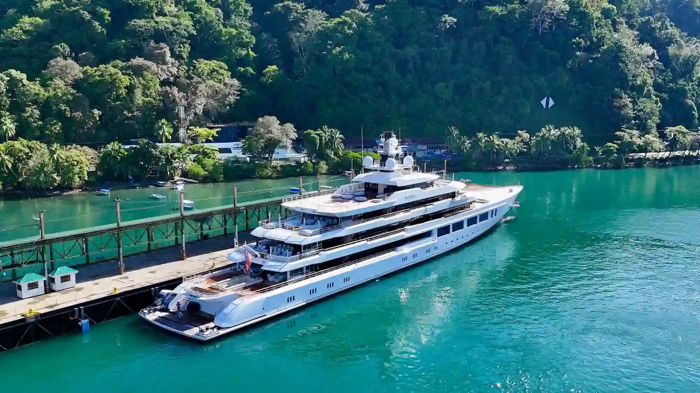
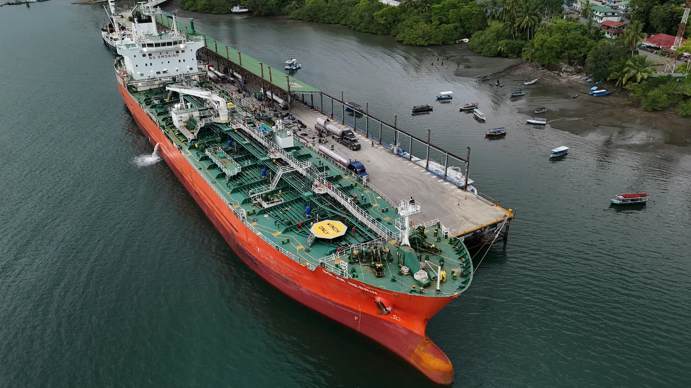
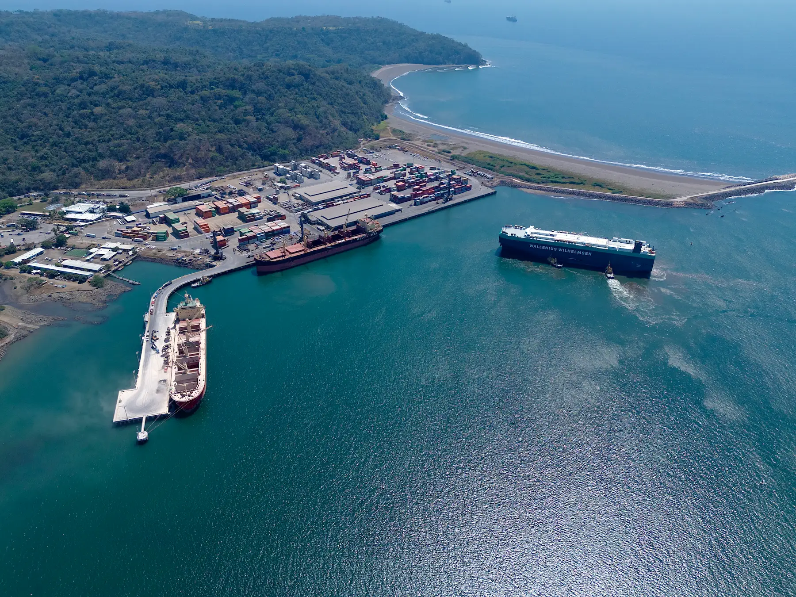

Presencia en tierra. Soluciones en tiempo real. Control operacional total en todos los puertos de Costa Rica. On-the-ground expertise. Real-time solutions. Total operational control at every Costa Rican port.
En Marina Pura Vida somos socios operacionales en tierra para embarcaciones que recalan a Costa Rica. Con presencia sólida en Golfito, Caldera y Moín, nos especializamos en gestionar escalas complejas, operaciones remotas y coordinación multiparte. At Marina Pura Vida we are hands-on operational partners for vessels calling Costa Rica. With strong presence in Golfito, Caldera, and Moín, we specialize in managing complex port calls, remote operations, and multi-party coordination.
Nuestro equipo combina ejecución en campo con asesoría estratégica, apoyando armadores, operadores, traders y empresas de logística con soluciones en tiempo real sobre el terreno. Our team combines field execution with strategic advisory, supporting shipowners, operators, traders, and logistics companies with real-time solutions on the ground.
"Operamos donde otros dudan — entregando certeza en cada escala." "We operate where others hesitate — delivering certainty in every port call."
Transparencia operacional total — coordinación pre-arribo, actualizaciones en tiempo real y documentación completa en cada escala.Full operational transparency — pre-arrival coordination, real-time updates, and complete documentation delivered to principals throughout every port call.
Capacidad sin igual en Golfito — el puerto más complejo del Pacífico Sur. Coordinación multisupplier y logística de fondeo.Unmatched on-ground capability at Golfito — Costa Rica's most complex southern port. We solve what others cannot, including multi-supplier coordination and anchorage logistics.
Tanqueros, graneles líquidos, aceites comestibles, RORO, carga de proyecto y superyates. Protocolos dedicados por tipo de buque.Tankers, liquid bulk, edible oils, ro-ro, project cargo, and superyachts. Deep operational experience across vessel types with dedicated protocols for each.
Línea directa con terminales, autoridades portuarias, aduanas y logística terrestre. Un punto de contacto elimina las demoras.Direct lines to terminals, port authorities, customs, truck logistics, and inspection bodies. One point of contact manages every party — eliminating delays.
Gestión Aduanatica in-house — TICA, DUA y DUCAS sin demoras. Cumplimiento total con la ley aduanera costarricense.In-house customs (Aduanatica) handling TICA, DUA, and DUCAS processes with zero delays. Full compliance with Costa Rican customs law including complex transit regimes.
No somos un punto de contacto — somos un equipo con autoridad para actuar. Si surge un problema a las 03:00, lo resolvemos.Not just a point of contact — a team with authority to act. When a port call issue arises at 0300, we solve it. No escalation chains. Immediate field response.
Asistencia integral al buque desde pre-arribo hasta despacho. Coordinación en tiempo real con todos los stakeholders, terminales y autoridades.Full vessel assistance from pre-arrival to departure. Real-time coordination with all stakeholders, terminals, and authorities.
Agencia de tránsito completa, coordinación de bunkering y logística a bordo para superyates y embarcaciones privadas en Golfito.Full transit agency, bunkering coordination, and onboard logistics for superyachts and private vessels at Golfito.

Especialistas en operaciones de tanqueros en Costa Rica. RECOPE Moín, aceites vegetales en Caldera y Golfito, químicos.Specialists in tanker operations in Costa Rica. RECOPE Moín, vegetable oils at Caldera and Golfito, chemicals.

Agencia especializada para buques RORO y transportistas de vehículos en Costa Rica. Experiencia con EUKOR y Wallenius Wilhelmsen.Specialized agency for RORO vessels and vehicle carriers in Costa Rica. Experience with EUKOR and Wallenius Wilhelmsen.

Gestión in-house Aduanatica. Todos los regímenes aduaneros costarricenses con cero demoras.In-house Aduanatica management. All Costa Rican customs regimes with zero delays.
Regímenes especiales, zonas francas, admisión temporal. Cumplimiento total con DGA.Special regimes, free zones, temporary admission. Full compliance with DGA.
Especialistas en Ley de Contratación Administrativa y procesos SICOP.Specialists in Administrative Contracting Law and SICOP bidding processes.
Cambios de tripulación en todos los puertos. Visas, transportes, hotel y logística completa.Crew changes at all ports. Visas, transportation, hotel and full logistics.
Abastecimiento de víveres, repuestos y suministros. Entrega directa a muelle o fondeo.Supply of provisions, spare parts and supplies. Direct delivery to berth or anchorage.
Gestión de repuestos, asistencia médica de emergencia y coordinación con autoridades sanitarias.Spare parts management, emergency medical assistance and coordination with health authorities.
Un solo punto de contacto para el Pacífico y el Atlántico. Toca cada puerto para ver draft máximo, coordenadas y servicios.One point of contact for Pacific & Atlantic. Tap each port to view max draft, coordinates and services.
Tráfico AIS en tiempo real en aguas costarricenses.Real-time AIS traffic in Costa Rican waters.
Información actualizada sobre la situación operacional y programación de arribo en los principales puertos de Costa Rica. Updated information on the operational situation and arrival schedule at Costa Rica's main ports.
Descarga la programación portuaria actualizada directamente desde el sistema SPC Caldera. El documento incluye lista de buques en espera, ocupación de puestos y tiempos estimados. Download the updated port schedule directly from the SPC Caldera system. The document includes waiting vessel list, berth occupancy and estimated times.
📄 Ver Situación Portuaria Caldera → View Caldera Port Schedule →Fuente oficial: web.spcaldera.com — Actualizado por SPC Official source: web.spcaldera.com — Updated by SPC
JAPDEVA distribuye la programación portuaria semanalmente. Para recibir el reporte más reciente o consultar disponibilidad de puestos, contáctenos directamente — lo gestionamos en tiempo real. JAPDEVA distributes the port schedule on a weekly basis. To receive the latest report or check berth availability, contact us directly — we manage it in real time.
Solicitar Programación JAPDEVA Request JAPDEVA Schedule📅 Actualizado: 📅 Updated: —
Si el documento no carga, If the document doesn't load, solicítalo por WhatsApprequest it via WhatsApp
Actualizaciones en tiempo real sobre condiciones en los puertos costarricenses.Real-time updates on conditions at Costa Rican ports.
Disponibles 24/7 para coordinar operaciones en todos los puertos de Costa Rica.Available 24/7 to coordinate operations at all Costa Rican ports.